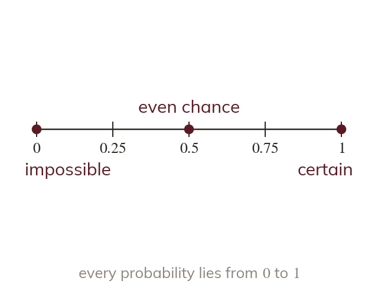
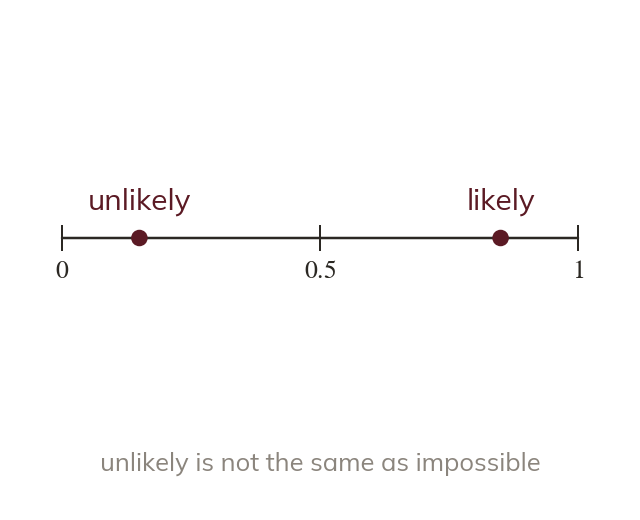
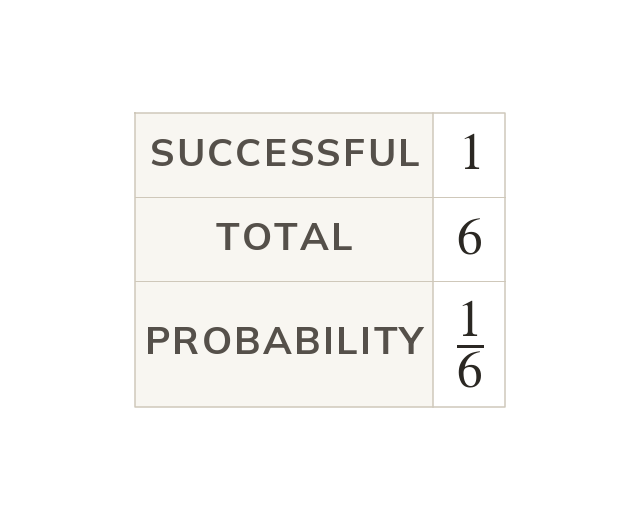
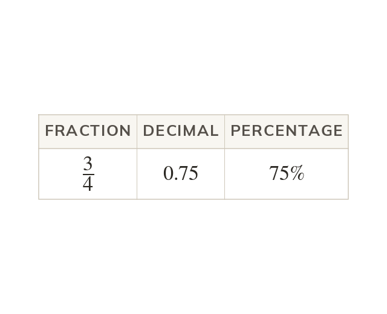

From impossible to certain
Probability runs from for impossible to for certain. An even chance is or or
Probability measures how likely an outcome is, on a scale from for impossible to for certain. An even chance is which is also or
Weather forecasts, games and medicine all measure how likely something is. Today you place events on a scale from to and calculate simple probabilities.
Work down the page at your own pace. Write every answer in your book first, then click to check it.
Read each card, then follow the worked examples one step at a time.

Probability runs from for impossible to for certain. An even chance is or or

Unlikely events lie between and and likely events between and
Only an impossible event sits at and only a certain one at
Pick an answer. If it's wrong, the feedback tells you which mistake it was.
Read each card, then follow the worked examples one step at a time.

For equally likely outcomes, = successful outcomes ÷ total outcomes. On a fair dice,

A probability can be written as a fraction, a decimal or a percentage. A probability of is also and
Pick an answer. If it's wrong, the feedback tells you which mistake it was.
Finished? Next lesson: 7.17.2 Complements and Mutually Exclusive Events.
For each skill, tap the one that is true for you today. Your Revise pages start with anything you mark Not yet.
Your ratings are saved on this device only.
Log in, then search for a code to practise that skill.
Videos, worksheets and more on each part of this lesson.